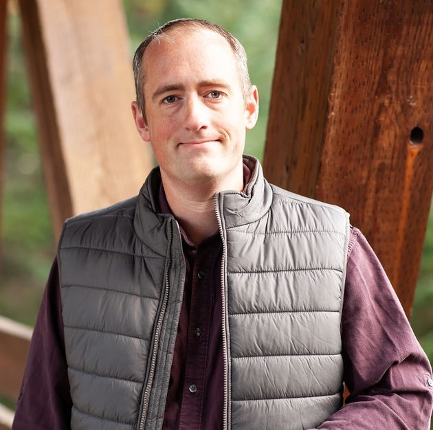

I build software that runs on real hardware. Most recently that's been AR headsets for defense and industrial use: headset calibration, camera access, hand and object tracking, on-device ML and voice commands, built in Unity, StereoKit, Android native and C++.
Before that I built HoloLens 2 inspection tools and VR alignment and tracking safety systems. Before that I spent 8 years at Boeing in robotics programming and manufacturing R&D: OpenCV inspection work, a patent, and a lot of respect for things that have to work on a factory floor.
Over the past year I've had two very different clients: the AR headset work above, and a scientific imaging app for a coral research lab (X-ray densitometry, 3D scan registration and a prototype ML model to guide band tracing) that's now in use in the lab. I also build my own projects in voice, vision, embedded and web, and I reuse that work on client projects. When a client needed a transcription demo, I started from the pipeline I'd already gotten working reliably in my own translator app, not from zero.
I'm a US citizen living in Spain (CET), with flexible overlap into US Pacific hours. Available from November 2026, as an employee or a contractor.
Apr 2026 – Oct 2026
Rivet Industries · Developer (Contract)
Perception and applied software for AR headsets. San Jose on-site, then remote.
Jan 2026 – present
Nova Southeastern University · Software Developer, Scientific Imaging (Contract via Arc)
Coral X-ray analysis app, rebuilt from VB6 and Fortran and extended with computer vision.
Aug 2023 – present
XR Mech Solutions · Founder and Principal Engineer
My own consulting company. Client work and my own products overlap a lot.
May 2021 – Sep 2023
Ong Innovations · Mechatronics and XR Engineer
HoloLens 2 inspection apps, LimitlessVR alignment and safety systems, Sira Medical.
Jun 2013 – May 2021
The Boeing Company · Robotics Programmer/Analyst, then Materials/Structures/Assembly Engineer R&D
Offline robot programming, OpenCV inspection, the Robotics Community of Practice, and a patent.
Feb 2012 – Jan 2013
National Renewable Energy Laboratory · Energy Analyst
Land use and economics studies for wind, solar and geothermal; 3 published papers.
IAAPA 2022 Brass Ring Award, Best New Product (LimitlessVR)
U.S. Patent 11,603,586 B2, Interim temper process (7075 aluminum), Boeing
M.S. Mechanical Engineering, Colorado School of Mines
B.S. Physics, University of Puget Sound
3 published papers, National Renewable Energy Laboratory
Certified Vision Professional, Advanced (AIA) · Arc Certified Remote Developer
Unity · StereoKit · OpenXR · Snapdragon Spaces · HoloLens 2 · Meta Quest · HTC Vive · Hand and object tracking · Headset and camera calibration · Spatial anchors · Photon
OpenCV · ONNX · TensorFlow Lite · PyTorch · YOLOv8 · CLIP · InsightFace · 3D scan registration · Image densitometry · WhisperX · Vosk
C++ · Android NDK and JNI · ESP32 (ESP-IDF, PlatformIO) · Arduino · Device interfaces over COM ports · Custom PCBs
C# · C++ · Python · Kotlin · TypeScript / JavaScript · Rust · SQL
.NET / WPF · Kotlin Multiplatform · Jetpack Compose · FastAPI · Node.js · WebSocket and WebRTC · PostgreSQL · SQLite · Docker
ABB RobotStudio · FANUC ROBOGUIDE · ATOS 3D scanning · MTConnect · OPC-UA/DA · FANUC FOCAS
I build with AI coding agents, using a planning, testing and audit process I put together myself. It keeps the agents consistent, on-task and working from the right context, and it gets me up to speed on unfamiliar SDKs fast.
The agents don't get the last word. I do the testing and debugging on the device, because that's where perception code actually fails, and hardware doesn't always behave the way its documentation says.
Side projects in voice, vision, embedded and web. The open-source ones are on the Work page.
ESP32 firmware and a .NET desktop app that estimate where WiFi and Bluetooth devices are from signal strength, using a small ESP-NOW mesh of anchor boards. Built on hardware I own. I kept the code private, since the same tool could be used to track people without their consent.
Unity client that streams a live PC desktop to AR glasses with remote mouse control. Runs on Snapdragon Spaces (OpenXR), Meta Quest and HoloLens 2 from a single codebase.
Reading practice for children with dyslexia. On-device speech recognition checks oral reading in real time, with dyslexia-aware phonetic matching that tolerates b/d and a/e confusion and classifies the kind of misread.
LAN multiplayer flag and geography quiz for family gatherings. Players join by scanning a QR code, no accounts or internet needed. Playable prototype, paused since July 2026.
Added VR to the Decentraland metaverse client: Vuplex WebView to bridge Unity and the Decentraland kernel, VR controller interaction, and Quest 2 Android performance work. Supported through 2023.
A 3D plotter and delta robot platform with custom etched PCBs, a small Bluetooth-controlled robot for my niece, an ESP8266 hot tub controller with a web interface, and a hydrogen generator and Jacob's ladder left over from a physics background.